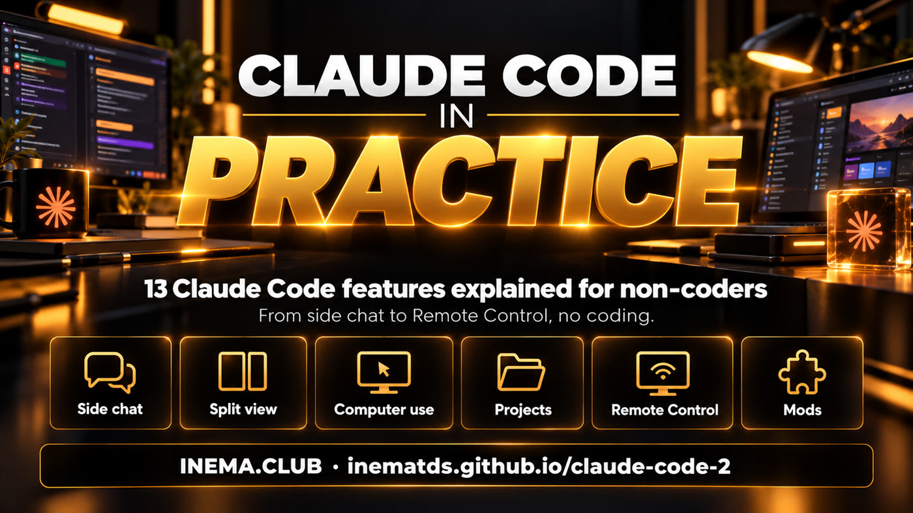

This guide explains, in simple terms, the 13 most useful new features in Claude Code, Anthropic’s assistant that works with your files and computer. It’s for people who create content, teach, or run a business and want to use AI in their daily work without knowing how to code. Each feature explains what it does, where to turn it on, a precaution, and a ready-to-use prompt. To get started, you just need the Claude app on Mac or Windows and a paid plan (Pro, Max, or Ultra); some features are still in testing or only available in the US, and the guide notes that for each one.
What it is
One page to explore, try, and share
“Claude Code 2.0” is a nickname many people gave to the bundle of new features in Claude Code 2.1.x (it’s not the old Claude 2 model). Here’s what changed, checked against the official documentation on November 1, 2026.

🎯 One update at a time
Each card explains the problem it solves, how to turn it on, and what to avoid. Try one, then the next.
📋 Ready-to-use prompt
Every card ends with a sample prompt. Click Copy, paste it into Claude, and replace the names with your own.
🧾 Official information only
Names and shortcuts checked against the documentation. Anything in testing, paid separately, or outside the US is clearly marked.
Before you start
What you need
Three quick checks prevent most questions.
1. The Claude app
New features in the Code tab are available in the Claude app for Mac and Windows (download it at claude.com/download). Almost everything here can be done in the app, without a terminal. On Linux, use Claude Code in the terminal.
2. A paid plan
Pro, Max, or Ultra. Some new features (Projects, Claude Duet) still require joining a waitlist; Motion is only available on Team and Enterprise plans.
3. An updated app
Many features depend on the version. Install updates whenever the app offers them. Optional, for those who already use the terminal: the command below shows the Claude Code version (mods require 2.1.287 or later).
claude --version
Words in this guide
Session: a conversation with Claude and its own history. Context: everything Claude is taking into account in that conversation. Thread: a task within a project, with its own conversation. Skill: a set of instructions you teach Claude and call by name. Preview and beta: features still being tested, which may change or may not be available to everyone yet. Terminal: the computer’s command window; it’s optional here. Prompt: the text you paste into Claude’s message box. Timestamp: the point in the video in minutes and seconds (e.g., 02:15). Ultra: Claude’s highest paid plan, above Max. VS Code: a code editor; only relevant to people who program.
Shortcuts: where the guide says Cmd (Mac), use Ctrl on Windows; where it says Option, use Alt.
The 13 new features
Choose one and try it now
Click to jump straight to the card. The examples use everyday tasks for someone creating a course, a video, or a post. Card 1 creates the lesson-1 folder with the lesson-1/script.md script, which the other prompts use; if you prefer, replace that path with the name of one of your own files.
Everything for one project in one place: conversations, files, and tasks.
In the app's Code tab, conversations are now organized into sections in the sidebar. Instead of one long list, each project (a course, a channel, a client) gets its own section, so you can find everything without scrolling.
How to use it
Update the app and open the Code tab (at the top of the app, next to Chat).
When you start a new session, choose the project folder on your computer. If you can't find it, ask Claude: "how do I open a session in my Documents/course folder?" The sidebar shows conversations grouped into sections.
Use one section per project. These sections used to be called "groups."
Tip
Think of the 5 projects you have today. One section for each is enough.
✕ Avoid Keeping all your conversations in one list.
✓ Do One section per project.
Organize this folder for my "AI Spreadsheets" course.
Create a task list for this week: lesson 1 script (save in lesson-1/script.md), 5 exercises, and 1 announcement post.
Check off each item as you finish it.
Save everything in a folder called "lesson-1".
Ask before changing or deleting any files that are already here.
02
Side chat
Ask on the side. Your main conversation stays clean.
A quick question in the middle of your work doesn’t need to go into the main conversation. Side chat answers using what Claude already knows from that session, and that exchange stays out of the main history. Your main conversation stays shorter and faster.
How to use it
In the app: Cmd + ; (Windows: Ctrl + ;) opens side chat; paste the question below.
In the terminal: type /btw and your question.
Close it and get back to work.
When to use it
Any quick question: a synonym, a calculation, “what is this?” The main conversation stays focused on your work.
✕ Avoid Filling the main conversation with random questions.
✓ Do Open side chat and ask on the side.
What’s a short synonym for “impressionante” that would work in a video title?
03
Split view
Two conversations side by side, each with its own task.
You can follow two sessions at the same time in the same window. One writes the script, the other prepares the post. Each works at its own pace, and you can see both.
How to use it
Option + click (Windows: Alt + click) on a session in the sidebar.
Or right-click the session → Open in → Split view.
To close split view: Cmd + Ctrl + W (Windows: Ctrl + Alt + W).
What to put side by side
Two different tasks. Never have both sessions editing the same file.
✕ Avoid Both sessions editing the same file.
✓ Do this One task on each side.
Write this week's community post based on the script in lesson-1/script.md.
120 words, simple language, and a question at the end for people to answer.
Don't publish it. Show me the draft.
04
Helpers (subagents)
One conversation splits the work among helpers and brings the results together.
You give a large task to one conversation. It opens helpers (subagents), each handles one part in its own context and returns a summary. The main conversation reviews and brings everything together. Many people call this “nested sessions,” but the official name is subagent.
How to use it
Open a session in the project folder.
Give it the whole task, divided into parts.
Ask for one helper per part and a review at the end.
Does it use more?
Yes. Each helper uses part of your limit. Start with 2 or 3. To coordinate several sessions, see the course Claude as an agent manager (in Portuguese).
✕ Avoid Opening 20 helpers and leaving.
✓ Do this Start with 2 or 3 and check usage.
Turn lesson 1 (lesson-1/script.md) into:
1. A lesson summary
2. 5 ideas for short clips with timestamps
3. 3 short social media posts
4. A community post
Use one subagent for each item. Each one handles only its part and returns the result.
At the end, review all four, fix anything that doesn’t match, and give me a short summary.
05
Background computer use
Claude uses your computer’s apps while you keep working.
For programs without another way to automate them, Claude clicks and types inside the app on its own. On Mac, this happens in the background without taking over your mouse.
How to use it
Turn on computer use in the app settings (Settings); it’s off by default.
On Mac, allow Accessibility and Screen Recording. On Windows, approve what the app asks for.
Ask it to do a task in an app.
Ideas for using it
Export a video in an editor, organize screenshots by month, test every button in an app you created.
✕ Avoid Allowing every app it asks for.
✓ Do Allow only the app for that task.
In testing (research preview) on Mac and Windows, on the Pro, Max, and Ultra plans. Not available for Team and Enterprise. Browsers are view-only: on websites, Claude uses its built-in browser (new feature 8).
Use background computer use without taking over my screen.
Organize the screenshots on my Desktop into a folder for each month inside "Screenshots".
Don’t delete anything.
Let me know when you’re done and how many files you moved.
06
Projects in the cloud
Your work continues with your laptop closed.
The new Projects is an ongoing conversation where Claude opens a thread for each task. The threads run in the cloud, so research continues even when your computer is off. Claude lets you know when a thread needs you. Don't confuse it with the old Projects on claude.ai, which was a folder of files.
How to use it
Look for Projects in the sidebar (claude.ai/code or the app's Code tab).
Can't find it? Join the waitlist.
Open a project and assign tasks.
Your files
Anything sent to the cloud leaves your computer. Decide what you're comfortable uploading first.
✕ Avoid Uploading a client's confidential file.
✓ Do Keep private files in a local folder.
Beta with a waitlist, on Pro, Max, and Ultra plans.
Research what has changed in AI video creation tools over the past 30 days.
List 5 new developments, with a source link for each one.
Then write 3 title ideas for a video about this, each under 60 characters.
Save everything in research.md.
07
Remote Control
Review and approve from your phone. Your computer keeps working.
Leave a session running on your computer and follow along on your phone in the Claude app. Read the plan, approve it, and leave. You don't need a terminal on your phone.
How to use it
In the session, type /remote-control (or /rc) in the session's message box. In the app, you can also turn it on from the session's Environment card.
In Settings → Code, turn on "Keep this computer awake for Remote Control."
On your phone, open the Claude app with the same account and join the session.
Remember
The work runs on your computer. If it sleeps or shuts down, it stops.
✕ Avoid Checking your phone every 5 minutes.
✓ Do this Approve the plan and let it work.
/remote-control
08
Built-in browser
Claude uses websites like you do, even without an integration.
The app has its own browser. Sign in to your account once, and Claude can read pages and click for you. It works for dashboards and websites that have no other way to automate tasks.
How to use it
Open it with Cmd + Shift + B (Windows: Ctrl + Shift + B).
Sign in yourself.
Describe the task in plain language.
Security
Keep the app up to date, and always ask it to “don’t publish or change anything” when you only need to read.
✕ Avoid Opening unfamiliar websites with an outdated app.
✓ Do Update the app first.
Open my YouTube channel dashboard in the browser. I'm already signed in.
Find the latest video and read its page.
Come up with 5 clip ideas with timestamps, a new description, and a community post.
Don't publish or change anything on the site.
09
Slides, designs, and dashboards
Say what you want, see it done, and make changes with words.
In Claude (the app’s Chat tab or claude.ai), ask for a presentation, an illustration, or a dashboard with numbers, and it puts it together in the conversation. The official names are Claude Slides, Claude Design, Dashboards, and Claude Motion (animated video). You make changes by talking, without opening another program.
How to use it
Describe what you want in words.
Make changes with words (“larger text,” “remove slide 4”).
Share the link.
Numbers
Before showing a dashboard, check 3 numbers against the original source.
✕ Avoid Sharing a dashboard without checking it.
✓ Do Check 3 numbers against the source.
Slides and Design are available on all plans. Dashboards is in beta. Claude Motion is in beta and only available on Team and Enterprise plans.
Create a 7-slide presentation summarizing lesson 1 (lesson-1/script.md).
One idea per slide, large text, black and yellow.
Put the lesson’s best line on slide 1.
10
Shared docs
A living page the team uses with Claude.
In Claude (the Chat tab in the app or claude.ai), it creates a document (Claude Docs) that you share with a link. Anyone who receives it can view, comment, or edit, depending on the permission you give. You (the doc owner) can tag @Claude in a comment, and it will revise or reply right there.
How to use it
Ask for the document.
Share it and choose: view, comment, or edit.
Tag @Claude in a comment to have it take action.
Why not a file?
The page stays live. Everyone works on the same copy, with no versions lost in email.
✕ Avoid Sending files back and forth.
✓ Do One page the team can edit.
Create a doc to track this month's livestream guests.
A table with: name, topic, date, and status (invited, confirmed, recorded).
Make it ready for me to share with the team.
11
Slash commands
Shortcuts that change how Claude works.
Type / in the message box and choose a command from the list. No programming needed. These five can help a lot in your day-to-day work.
How to use them
Type /.
Choose a command.
Start with /output-style concise: responses get shorter. To switch back, run /output-style again and choose another style.
Can't find your command?
If you created a skill, keep its description short and say when to use it.
/rewind: go back to before a bad response (or press Esc twice).
/context: shows what's taking up space in the conversation.
/recap: a one-line summary when you return from a break.
/goal: keeps working until it reaches a clear goal.
/output-style: shorter or more detailed responses.
✕ Avoid Long, vague descriptions in your skills.
✓ Do Keep them short and say when to use them.
/output-style concise
12
Mods
Change how Claude Code looks and works: status bars, alerts, bars, and commands.
A mod is an add-on that changes how Claude Code looks and behaves. It can show a bar with how much of the conversation has been used, an alert when something finishes, or a new command. You don’t need to change any code: ask Claude to review and install one, or create one.
How to use it
Update to version 2.1.287 or newer.
In a session on the Code tab, paste the prompt below with the mod link.
✕ Avoid Installing a mod without reading what it does.
✓ Do Ask Claude to review the code first.
Mods don’t run in isolation: they have access to whatever Claude Code can access. That’s why the prompt asks Claude to review one first. For terminal users: claude plugin validate followed by the mod folder lists what it requests, and claude --safe-mode opens Claude Code without any mods.
I want to install this Claude Code mod: [paste the GitHub link]
Before installing, read the code and run claude plugin validate in its folder.
Tell me in simple terms what it can access: my files, commands, and the internet.
If it’s safe, install it and tell me how to turn it off.
No link? Then create a small mod: [say what you want to see, e.g., a bar showing how much of the conversation has been used].
13
Claude Duet
An assistant that brings the work to you.
Duet looks at what’s pending in your projects, prepares a draft, and asks before taking action. Instead of having to remember everything, it brings you the next task.
When it becomes available, ask for the task of the day.
What it’s for
Keep projects moving when you’re not looking.
✕ Avoid Using it for everyday one-off tasks.
✓ Do Use it to keep projects moving.
Currently available only in the US as a preview, with a waitlist (Pro, Max, and Ultra plans). It’s not available outside the US yet: save the prompt for when it launches.
Every morning, look at my course and channel work in Claude.
Bring me the task that will save me the most time today.
Draft it and ask me before sending, publishing, or deleting anything.
Where it works
What you can use today
Status as of November 1, 2026. Plans and availability change: check your app.
Feature
Where
Status
Sections, Side chat, Split view, browser
Mac and Windows app
Available
Subagents, slash commands
App and terminal
Available
Mods
App, terminal, and VS Code
Available (version 2.1.287+)
Remote Control
Computer + mobile app
Available
Computer use
Mac and Windows · Pro, Max, Ultra
In testing, off by default
Projects in the cloud
claude.ai/code and app · Pro, Max, Ultra
Beta with a waitlist
Slides, Design / Dashboards / Motion
Claude
Available / beta / beta for Team and Enterprise only
Shared docs
Claude
Available
Claude Duet
US only
Preview with a waitlist
Start with one. When it makes a difference in your day, move on to the next. All prompts in this guide are available as text in the prompts/ folder, and the full course, with 7 lessons and hands-on practice, is available in Claude Code 2.0 in practice (INEMA.CLUB).